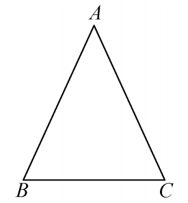
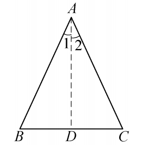
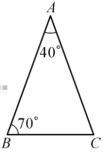
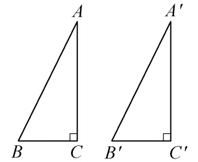
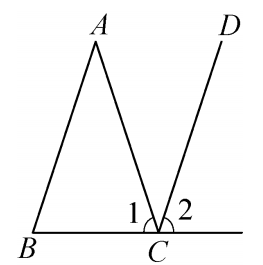
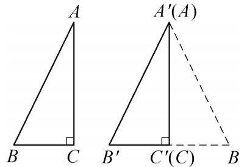
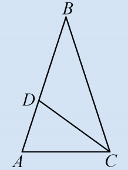
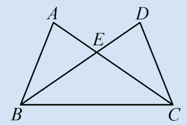
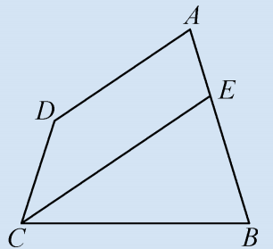
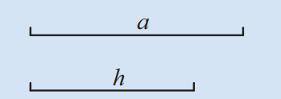

🔍 从性质到判定
我们已经知道等腰三角形两底角相等。反过来，如果一个三角形有两个角相等，那么它是等腰三角形吗？
通过画图可以发现：有两个角相等的三角形是等腰三角形。

📖 判定定理：等角对等边
有两个角相等的三角形是等腰三角形。（简写：等角对等边）
已知：如图，在△ABC中，∠B = ∠C。求证：AB = AC。

证明： 作∠BAC的平分线AD。
在△BAD和△CAD中，
∠B = ∠C (已知)，∠BAD = ∠CAD (角平分线定义)，AD = AD (公共边)，
∴ △BAD ≅ △CAD (AAS)。
∴ AB = AC (全等三角形对应边相等)。
🤔 思考1
“等角对等边”与“等边对等角”互为逆定理。你能说出等腰三角形的性质定理与判定定理的区别与联系吗？
📝 例4
在△ABC中，已知∠A = 40°，∠B = 70°。求证：AB = AC。

∴ ∠C = ∠B，根据“等角对等边”得 AB = AC。
🤔 思考2
在等腰三角形中，添加什么条件可使其成为等边三角形？除了顶角或底角为60°，还有别的条件吗？
📐 等边三角形的判定定理
由等腰三角形的判定定理，我们可以进一步得到等边三角形的两个判定定理：
- 定理1：三个角都相等的三角形是等边三角形。
- 定理2：有一个角等于60°的等腰三角形是等边三角形。

① 若顶角∠A=60°，则底角∠B=∠C=(180°-60°)/2=60°，三个角均为60°，故是等边三角形。
② 若一个底角∠B=60°，则∠C=60°，∠A=180°-120°=60°，同样得等边三角形。
因此，有一个角为60°的等腰三角形一定是等边三角形。
✨ 等边三角形是特殊的等腰三角形，也叫正三角形，有三条对称轴。
📝 例5
如图，AB // CD，∠1 = ∠2。求证：AB = AC。

又 ∠1 = ∠2， ∴ ∠B = ∠1。 ∴ AB = AC (等角对等边)。
📝 例6
如图，在Rt△ABC和Rt△A'B'C'中，∠ACB=∠A'C'B'=90°，AB=A'B'，AC=A'C'。
求证：Rt△ABC ≅ Rt△A'B'C' (HL判定定理)。

证明： 将Rt△ABC平移旋转，使A与A'、C与C'重合，且B与B'位于A'C'两侧。
则∠A'C'B = ∠A'C'B' = 90°，∴ B',C,B共线。
在△A'B'B中，A'B' = AB = A'B， ∴ ∠B = ∠B' (等边对等角)。
又AC = A'C'，∠ACB = ∠A'C'B' = 90°，利用AAS可证Rt△ABC ≅ Rt△A'B'C'。
📖 读一读 · 从泰勒斯到欧几里得
古希腊数学家泰勒斯曾用相似三角形测量金字塔高度，而等腰三角形的判定与性质也是早期几何发展的核心。欧几里得在《几何原本》第一卷中明确证明了“等边对等角”及其逆命题，为后世逻辑推理奠定了基础。“等角对等边”不仅用于几何证明，在建筑、工程中也有广泛应用，如人字梁的稳定性就利用了等腰三角形的特性。
✍️ 课堂练习




📌 课堂小结
- 等腰三角形的判定： 等角对等边（两个角相等 → 等腰）。
- 等边三角形的判定： ①三个角都相等；②有一个角是60°的等腰三角形。
- 直角三角形全等HL定理的证明： 利用等腰三角形的性质及全等。
- 证明线段相等常用思路： 构造等腰三角形或全等三角形。
🧠 数学思想 · 核心素养
• 逆向思维： 从性质到判定，培养互逆命题的逻辑关系；
• 转化思想： 将角相等转化为边相等，通过全等三角形实现；
• 分类讨论： 等边三角形判定中考虑顶角和底角两种情况；
• 演绎推理： 每一步证明都有理有据，严谨规范；
• 几何直观： 通过动态画板感受“等角对等边”的必然性。